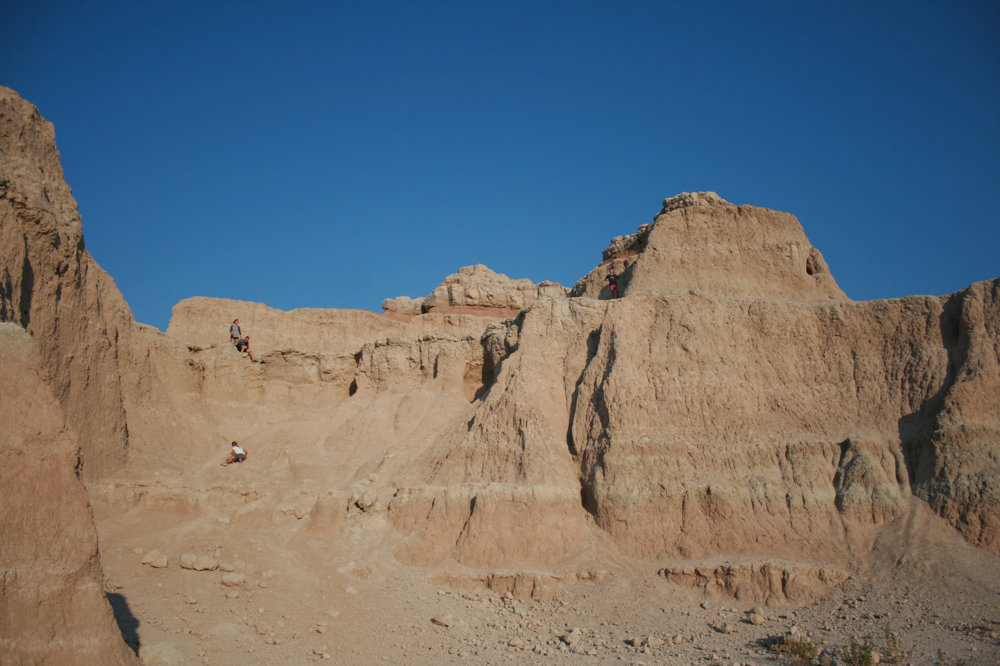
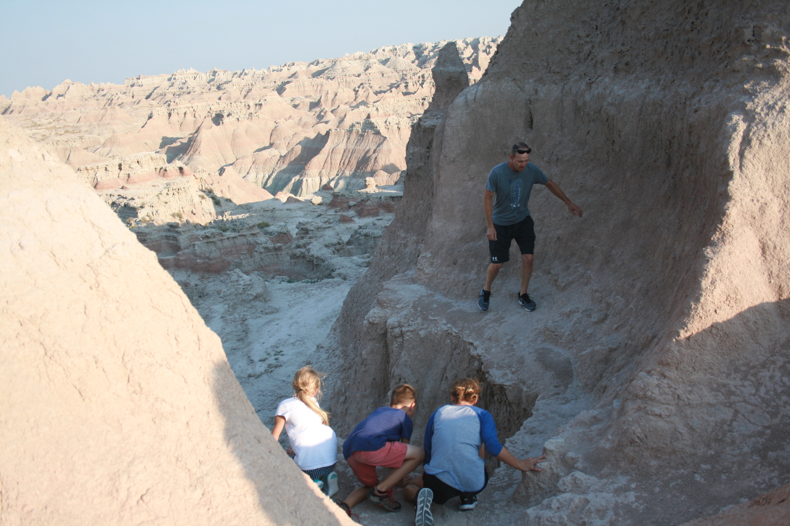
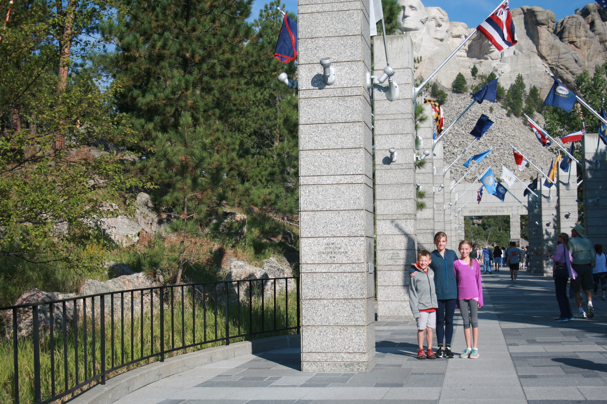

The Badlands
This year we decided to visit the National Parks in Wyoming.
Our first stop on our way to Wyoming, was the Badlands in South Dakota. The kids had fun climbing mountains, and playing in the crevices.
 Mt. Rushmore
The next day we drove through the Black Hills and stopped to see Mt. Rushmore. We took a short hike around the sculpture
Grand Teton National Park
Our favorite part of the trip was Grand Teton National Park. We took a ferry across Jenny Lake and hiked back around. We saw beautiful waterfalls and scenery, and a moose!

Yellowstone National Park
The last part of our trip, we spent in Yellowstone. Yellowstone has some beautiful geothermal features you can't see anywhere else. We stayed at the Old Faithful Inn, which was built in 1903. It was gorgeous and right next to Old Faithful. We were able to go whitewater rafting on the Yellowstone River, the kids spotted two bald eagles while on our rafting trip.